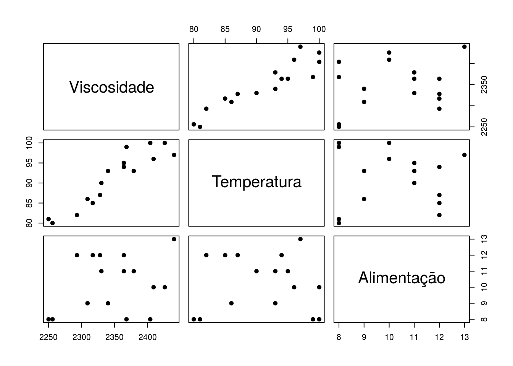

Reação química + tipos de embalagens (Modelo com erros normais)
Cesar Taconeli
Exemplo - Análise de reação química (Modelo com erros normais)
Leitura e descritiva dos dados
dados <- read.table('https://pastebin.com/raw/BTzCSEgy',header=T)
names(dados) <- c('Viscosidade','Temperatura','Alimentação')
summary(dados)## Viscosidade Temperatura Alimentação
## Min. :2250 Min. : 80.0 Min. : 8.00
## 1st Qu.:2315 1st Qu.: 85.8 1st Qu.: 8.75
## Median :2352 Median : 93.0 Median :10.50
## Mean :2349 Mean : 91.1 Mean :10.25
## 3rd Qu.:2385 3rd Qu.: 96.2 3rd Qu.:12.00
## Max. :2440 Max. :100.0 Max. :13.00
Observando os gráficos, notamos indícios de existência de uma tendência crescente da viscosidade com relação às outras duas variáveis (sobretudo quanto à temperatura).
Ajuste do modelo de regressão linear com as duas variáveis explicativas
A função lm ajusta modelos lineares (neste caso, um modelo de regressão linear com duas variáveis explicativas).
##
## Call:
## lm(formula = Viscosidade ~ Temperatura + Alimentação, data = dados)
##
## Residuals:
## Min 1Q Median 3Q Max
## -21.497 -13.198 -0.474 10.556 25.430
##
## Coefficients:
## Estimate Std. Error t value Pr(>|t|)
## (Intercept) 1566.078 61.592 25.43 1.8e-12 ***
## Temperatura 7.621 0.618 12.32 1.5e-08 ***
## Alimentação 8.585 2.439 3.52 0.0038 **
## ---
## Signif. codes: 0 '***' 0.001 '**' 0.01 '*' 0.05 '.' 0.1 ' ' 1
##
## Residual standard error: 16.4 on 13 degrees of freedom
## Multiple R-squared: 0.927, Adjusted R-squared: 0.916
## F-statistic: 82.5 on 2 and 13 DF, p-value: 4.1e-08## (Intercept) Temperatura Alimentação
## 1 1 80 8
## 2 1 93 9
## 3 1 100 10
## 4 1 82 12
## 5 1 90 11
## 6 1 99 8
## 7 1 81 8
## 8 1 96 10
## 9 1 94 12
## 10 1 93 11
## 11 1 97 13
## 12 1 95 11
## 13 1 100 8
## 14 1 85 12
## 15 1 86 9
## 16 1 87 12
## attr(,"assign")
## [1] 0 1 2Por meio do summary, obtemos as estimativas (e os respectivos erros) associados a cada parâmetro do modelo, suas significâncias, além de indicadores de qualidade do ajuste como os coeficientes de determinação ajustado e não ajustado e o teste F para significância do modelo. Pode-se atestar, pelo teste F, a significância do modelo, que é capaz de explicar 92,7% da variação dos dados. Além disso, as evidências de tendências crescentes destacadas na análise descritiva são aqui confirmadas com base nas significâncias dos coeficientes do modelo (p<0,001, para a temperatura, e p=0,003, para a taxa de alimentação).
## [1] "coefficients" "residuals" "effects" "rank"
## [5] "fitted.values" "assign" "qr" "df.residual"
## [9] "xlevels" "call" "terms" "model"Para mais informações, consultar a documentação - help(‘lm’)
Ajuste alternativo, ‘centrando’ as variáveis explicativas, ou seja, diminuindo de cada observação das variáveis explicativas a respectiva média.
##
## Call:
## lm(formula = Viscosidade ~ scale(Temperatura, scale = F) + scale(Alimentação,
## scale = F), data = dados)
##
## Residuals:
## Min 1Q Median 3Q Max
## -21.497 -13.198 -0.474 10.556 25.430
##
## Coefficients:
## Estimate Std. Error t value Pr(>|t|)
## (Intercept) 2348.562 4.090 574.27 < 2e-16 ***
## scale(Temperatura, scale = F) 7.621 0.618 12.32 1.5e-08 ***
## scale(Alimentação, scale = F) 8.585 2.439 3.52 0.0038 **
## ---
## Signif. codes: 0 '***' 0.001 '**' 0.01 '*' 0.05 '.' 0.1 ' ' 1
##
## Residual standard error: 16.4 on 13 degrees of freedom
## Multiple R-squared: 0.927, Adjusted R-squared: 0.916
## F-statistic: 82.5 on 2 and 13 DF, p-value: 4.1e-08O que mudou?
Diagnóstico do modelo
## 1 2 3 4 5 6 7
## 11.54026 -12.12136 11.94476 -1.04171 -16.42718 -21.26426 -2.08103
## 8 9 10 11 12 13 14
## 25.42992 -21.49719 9.70895 23.05409 -20.53363 7.11445 0.09442
## 15 16
## 10.22767 -4.14816## 1 2 3 4 5 6 7
## 0.874677 -0.782134 0.804720 -0.073584 -1.045178 -1.516552 -0.154195
## 8 9 10 11 12 13 14
## 1.636773 -1.418617 0.618737 1.658978 -1.320321 0.515950 0.006394
## 15 16
## 0.671908 -0.275947## 1 2 3 4 5 6 7
## 0.866239 -0.769780 0.793157 -0.070712 -1.049225 -1.606033 -0.148282
## 8 9 10 11 12 13 14
## 1.764894 -1.482537 0.603415 1.795214 -1.363213 0.500863 0.006144
## 15 16
## 0.657058 -0.265902preditos <- ajuste1$fitted.values # Vetor de valores ajustados pelo modelo.
plot(preditos, residuos,xlab='Valores ajustados', ylab='Resíduos', pch=20, cex=1.5)Há algum indício nos resíduos de variância não constante (a dispersão aumenta conforme a viscosidade). Como poderíamos remediar (ou melhor avaliar) isso?
Investigar normalidade.
##
## Shapiro-Wilk normality test
##
## data: residuos
## W = 0.94, p-value = 0.4Teste de normalidade para os resíduos. Não há evidências de não normalidade.
## Influence measures of
## lm(formula = Viscosidade ~ Temperatura + Alimentação, data = dados) :
##
## dfb.1_ dfb.Tmpr dfb.Almç dffit cov.r cook.d hat inf
## 1 0.572998 -0.44867 -0.35643 0.63496 1.629 1.37e-01 0.3495
## 2 -0.021266 -0.05888 0.15190 -0.26010 1.226 2.33e-02 0.1025
## 3 -0.239857 0.29356 -0.03506 0.36741 1.325 4.63e-02 0.1767
## 4 -0.018564 0.02837 -0.02156 -0.04094 1.696 6.05e-04 0.2511 *
## 5 -0.011855 0.04748 -0.12249 -0.30281 1.058 3.03e-02 0.0769
## 6 0.227172 -0.56314 0.63321 -0.96516 0.965 2.77e-01 0.2653
## 7 -0.089694 0.06829 0.05970 -0.10157 1.858 3.72e-03 0.3194 *
## 8 -0.253758 0.34306 -0.07215 0.58164 0.705 9.70e-02 0.0980
## 9 0.298212 -0.17042 -0.41605 -0.60286 0.895 1.11e-01 0.1419
## 10 -0.058204 0.04400 0.06996 0.17781 1.263 1.11e-02 0.0799
## 11 -0.737662 0.46204 0.86239 1.11495 0.863 3.54e-01 0.2784
## 12 0.231498 -0.20870 -0.15855 -0.44471 0.913 6.18e-02 0.0962
## 13 -0.092517 0.20105 -0.20099 0.31970 1.682 3.62e-02 0.2895
## 14 0.000843 -0.00159 0.00179 0.00293 1.560 3.10e-06 0.1852
## 15 0.188814 -0.13570 -0.13043 0.25863 1.321 2.33e-02 0.1342
## 16 -0.015882 0.04576 -0.07587 -0.11413 1.479 4.68e-03 0.1556Medidas de influência. As unidades 4 e 7 são destacadas como possíveis observações influentes.
## Potentially influential observations of
## lm(formula = Viscosidade ~ Temperatura + Alimentação, data = dados) :
##
## dfb.1_ dfb.Tmpr dfb.Almç dffit cov.r cook.d hat
## 4 -0.02 0.03 -0.02 -0.04 1.70_* 0.00 0.25
## 7 -0.09 0.07 0.06 -0.10 1.86_* 0.00 0.32Ambas as observações são destacadas por com relação à medida COVR, ou seja, pela alteração na precisão das estimativas. Vamos ver como ficariam os resultados eliminando tais observações.
##
## Call:
## lm(formula = Viscosidade ~ Temperatura + Alimentação, data = dados)
##
## Residuals:
## Min 1Q Median 3Q Max
## -21.497 -13.198 -0.474 10.556 25.430
##
## Coefficients:
## Estimate Std. Error t value Pr(>|t|)
## (Intercept) 1566.078 61.592 25.43 1.8e-12 ***
## Temperatura 7.621 0.618 12.32 1.5e-08 ***
## Alimentação 8.585 2.439 3.52 0.0038 **
## ---
## Signif. codes: 0 '***' 0.001 '**' 0.01 '*' 0.05 '.' 0.1 ' ' 1
##
## Residual standard error: 16.4 on 13 degrees of freedom
## Multiple R-squared: 0.927, Adjusted R-squared: 0.916
## F-statistic: 82.5 on 2 and 13 DF, p-value: 4.1e-08##
## Call:
## lm(formula = Viscosidade ~ Temperatura + Alimentação, data = dados,
## subset = -4)
##
## Residuals:
## Min 1Q Median 3Q Max
## -21.6 -14.3 -0.2 10.7 25.4
##
## Coefficients:
## Estimate Std. Error t value Pr(>|t|)
## (Intercept) 1567.268 66.265 23.65 2.0e-11 ***
## Temperatura 7.603 0.693 10.96 1.3e-07 ***
## Alimentação 8.640 2.653 3.26 0.0069 **
## ---
## Signif. codes: 0 '***' 0.001 '**' 0.01 '*' 0.05 '.' 0.1 ' ' 1
##
## Residual standard error: 17 on 12 degrees of freedom
## Multiple R-squared: 0.922, Adjusted R-squared: 0.909
## F-statistic: 70.5 on 2 and 12 DF, p-value: 2.33e-07##
## Call:
## lm(formula = Viscosidade ~ Temperatura + Alimentação, data = dados,
## subset = -7)
##
## Residuals:
## Min 1Q Median 3Q Max
## -21.450 -14.487 -0.101 10.117 25.415
##
## Coefficients:
## Estimate Std. Error t value Pr(>|t|)
## (Intercept) 1571.823 74.854 21.00 7.9e-11 ***
## Temperatura 7.577 0.708 10.70 1.7e-07 ***
## Alimentação 8.433 2.734 3.08 0.0095 **
## ---
## Signif. codes: 0 '***' 0.001 '**' 0.01 '*' 0.05 '.' 0.1 ' ' 1
##
## Residual standard error: 17 on 12 degrees of freedom
## Multiple R-squared: 0.907, Adjusted R-squared: 0.891
## F-statistic: 58.4 on 2 and 12 DF, p-value: 6.54e-07##
## Call:
## lm(formula = Viscosidade ~ Temperatura + Alimentação, data = dados,
## subset = -c(4, 7))
##
## Residuals:
## Min 1Q Median 3Q Max
## -21.45 -15.68 3.35 10.04 25.43
##
## Coefficients:
## Estimate Std. Error t value Pr(>|t|)
## (Intercept) 1573.973 81.721 19.26 8.0e-10 ***
## Temperatura 7.549 0.805 9.37 1.4e-06 ***
## Alimentação 8.492 2.928 2.90 0.014 *
## ---
## Signif. codes: 0 '***' 0.001 '**' 0.01 '*' 0.05 '.' 0.1 ' ' 1
##
## Residual standard error: 17.8 on 11 degrees of freedom
## Multiple R-squared: 0.895, Adjusted R-squared: 0.876
## F-statistic: 47 on 2 and 11 DF, p-value: 4.07e-06A eliminação das observações 4 e 7 não altera de forma substancial as estimativas e não muda as inferências do modelo.
Intervalos de confiança para os parâmetros do modelo.
## 2.5 % 97.5 %
## (Intercept) 1433.017 1699.139
## Temperatura 6.285 8.957
## Alimentação 3.316 13.853Algumas predições
## 1 2 3 4 5 6 7 8 9 10 11 12 13 14 15
## 2244 2352 2414 2294 2346 2389 2252 2384 2385 2369 2417 2385 2397 2317 2299
## 16
## 2332## fit lwr upr
## 1 2244 2224 2265
## 2 2352 2341 2363
## 3 2414 2399 2429
## 4 2294 2276 2312
## 5 2346 2337 2356
## 6 2389 2371 2407
## 7 2252 2232 2272
## 8 2384 2373 2395
## 9 2385 2372 2399
## 10 2369 2359 2379
## 11 2417 2398 2436
## 12 2385 2374 2395
## 13 2397 2378 2416
## 14 2317 2302 2332
## 15 2299 2286 2312
## 16 2332 2318 2346Viscosidade estimada e intervalo de confiança (95%) para a viscosidade média.
## fit lwr upr
## 1 2244 2203 2286
## 2 2352 2315 2389
## 3 2414 2376 2452
## 4 2294 2255 2334
## 5 2346 2310 2383
## 6 2389 2350 2429
## 7 2252 2211 2293
## 8 2384 2347 2421
## 9 2385 2348 2423
## 10 2369 2333 2406
## 11 2417 2377 2457
## 12 2385 2348 2422
## 13 2397 2357 2437
## 14 2317 2278 2355
## 15 2299 2261 2336
## 16 2332 2294 2370Viscosidade estimada e intervalo de predição (95%) para a viscosidade de uma nova observação.
Agora, vamos repetir os códigos considerando um par de valores diferente dos que aparecem na base.
## 1
## 2385## fit lwr upr
## 1 2385 2374 2395## fit lwr upr
## 1 2385 2348 2422Gráficos para a viscosidade estimada com bandas de confiança.
Viscosidade estimada versus temperatura (alimentação fixada na média)
Viscosidade estimada versus alimentação (temperatura fixada na média)
Viscosidade estimada versus alimentação (temperatura fixada em 85)
Viscosidade estimada versus temperatura (alimentação fixada em 12)
Exemplo 2 - vendas segundo o tipo de embalagem.
Descrição dos dados
Há fortes indícios de diferença nas vendas conforme o tipo de embalagem.
## E1 E2 E3 E4
## 14 12 19 27## E1 E2 E3 E4
## 3.606 2.000 2.000 3.000Ajuste do modelo de análise de variância com um fator
## Analysis of Variance Table
##
## Response: Vendas
## Df Sum Sq Mean Sq F value Pr(>F)
## Embalagem 3 402 134.0 17.9 0.00066 ***
## Residuals 8 60 7.5
## ---
## Signif. codes: 0 '***' 0.001 '**' 0.01 '*' 0.05 '.' 0.1 ' ' 1A análise de variância confirma as evidências anteriores de que as vendas, em média, variam conforme o tipo de embalagem. summary(modelo1) Repare que nessa parametrização o intercepro corresponde à média para a embalagem 1 e os demais parâmetros às diferenças das médias para as embalagens 2, 3 e 4 em relação à média da embalagem 1.
Os resultados indicam que as embalagens 3 e 4 proporcionam maior venda média do que a embalagem 1, não havendo diferença entre as vendas médias proporcionadas pelas embalagens 1 e 2. Nota - se desejado, poderia prosseguir com a execução de algum teste de comparações múltiplas.
## [1] "coefficients" "residuals" "effects" "rank"
## [5] "fitted.values" "assign" "qr" "df.residual"
## [9] "contrasts" "xlevels" "call" "terms"
## [13] "model"## (Intercept) EmbalagemE2 EmbalagemE3 EmbalagemE4
## 1 1 0 0 0
## 2 1 0 0 0
## 3 1 0 0 0
## 4 1 1 0 0
## 5 1 1 0 0
## 6 1 1 0 0
## 7 1 0 1 0
## 8 1 0 1 0
## 9 1 0 1 0
## 10 1 0 0 1
## 11 1 0 0 1
## 12 1 0 0 1
## attr(,"assign")
## [1] 0 1 1 1
## attr(,"contrasts")
## attr(,"contrasts")$Embalagem
## [1] "contr.treatment"Ajuste do modelo sem intercepto (parametrização alternativa)
##
## Call:
## lm(formula = Vendas ~ Embalagem - 1)
##
## Residuals:
## Min 1Q Median 3Q Max
## -3 -2 0 2 4
##
## Coefficients:
## Estimate Std. Error t value Pr(>|t|)
## EmbalagemE1 14.00 1.58 8.85 2.1e-05 ***
## EmbalagemE2 12.00 1.58 7.59 6.4e-05 ***
## EmbalagemE3 19.00 1.58 12.02 2.1e-06 ***
## EmbalagemE4 27.00 1.58 17.08 1.4e-07 ***
## ---
## Signif. codes: 0 '***' 0.001 '**' 0.01 '*' 0.05 '.' 0.1 ' ' 1
##
## Residual standard error: 2.74 on 8 degrees of freedom
## Multiple R-squared: 0.986, Adjusted R-squared: 0.979
## F-statistic: 143 on 4 and 8 DF, p-value: 1.79e-07Agora, os quatro parâmetros correspondem às vendas médias das quatro embalagens.
Diagnóstico do modelo
residuos <- rstandard(modelo1) # Vetor de resíduos
preditos <- modelo1$fitted.values # Vetor de valores ajustados
plot(preditos,residuos,pch=20,xlab='Valores ajustados',ylab='Resíduos',cex=1.5)Investigar heterocedasticidade, observações mal-ajustadas (outliers, pontos influentes).
Não há qualquer indício de problemas no ajuste.

Sem problemas quanto ao pressuposto de normalidade.
##
## Shapiro-Wilk normality test
##
## data: residuos
## W = 0.94, p-value = 0.4Teste de normalidade. A hipótese nula de normalidade não é rejeitada.
##
## Bartlett test of homogeneity of variances
##
## data: residuos by Embalagem
## Bartlett's K-squared = 0.87, df = 3, p-value = 0.8Teste de igualdade de variâncias. A hipótese nula de igualdade não é rejeitada.
Intervalos de confiança sob as duas parametrizações.
## 2.5 % 97.5 %
## (Intercept) 10.3539 17.646
## EmbalagemE2 -7.1564 3.156
## EmbalagemE3 -0.1564 10.156
## EmbalagemE4 7.8436 18.156## 2.5 % 97.5 %
## EmbalagemE1 10.354 17.65
## EmbalagemE2 8.354 15.65
## EmbalagemE3 15.354 22.65
## EmbalagemE4 23.354 30.65Vamos testar algumas hipóteses referentes a combinações lineares dos parâmetros.
## Linear hypothesis test
##
## Hypothesis:
## - EmbalagemE3 + EmbalagemE4 = 0
##
## Model 1: restricted model
## Model 2: Vendas ~ Embalagem - 1
##
## Res.Df RSS Df Sum of Sq F Pr(>F)
## 1 9 156
## 2 8 60 1 96 12.8 0.0072 **
## ---
## Signif. codes: 0 '***' 0.001 '**' 0.01 '*' 0.05 '.' 0.1 ' ' 1Testando a igualdade de médias das embalagens 3 e 4.
## Linear hypothesis test
##
## Hypothesis:
## - 0.5 EmbalagemE2 + EmbalagemE3 - 0.5 EmbalagemE4 = 0
##
## Model 1: restricted model
## Model 2: Vendas ~ Embalagem - 1
##
## Res.Df RSS Df Sum of Sq F Pr(>F)
## 1 9 60.5
## 2 8 60.0 1 0.5 0.07 0.8Testando a igualdade da embalagem 3 e da média das embalagens 4 e 2.